愛鷹山
| 日付 | 2016年4月30日（土） |
|---|---|
| 山域 | 富士山周辺 |
| メンバー | 家族（妻、長女・5歳、長男・2歳） |
| 山行形態 | 子連れ日帰り |
| アクセス | 車 |
| ルート (Map) | 十里木高原駐車場 (7:59) - (9:27) 平坦地 - (9:58) 越前岳 (10:36) - (12:10) 十里木高原駐車場 |
GWの後半は旅行に行く予定。
前半は特に予定が無いが、晴の一日を選んで山に行くことにする。
高速道路が混雑しそうなので、中央道と関越道は回避。
東名を使用して愛鷹山を訪れることにする。
駐車場はほぼ満車でタッチの差で停めることができた。標高880m。
十里木高原の美しい草原を登っていく。
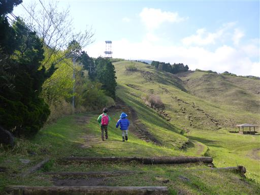
程なく展望台に到着。
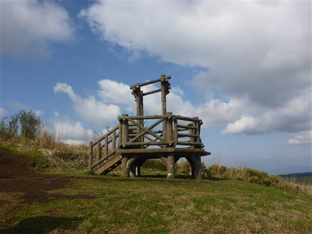
残念ながら富士山は雲の中。
愛鷹山に登って富士山の姿がすっきりと見えたことは一度も無い。
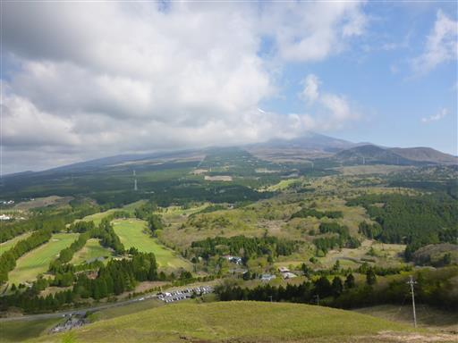
この辺りは新緑が美しい
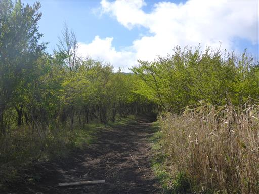
中腹まで登ると愛鷹山の最高峰である越前岳の全体像が見えてくる。
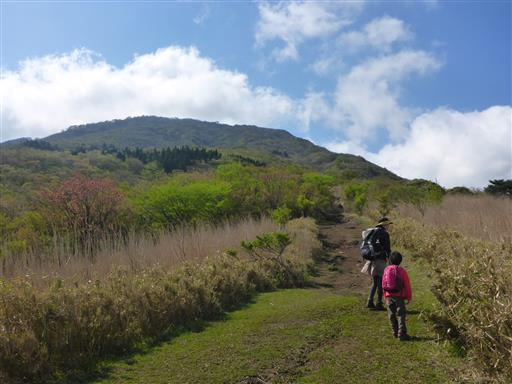
富士山には雲がかかっているが、天気は晴。
遠くに道志～丹沢の山々が見えている。
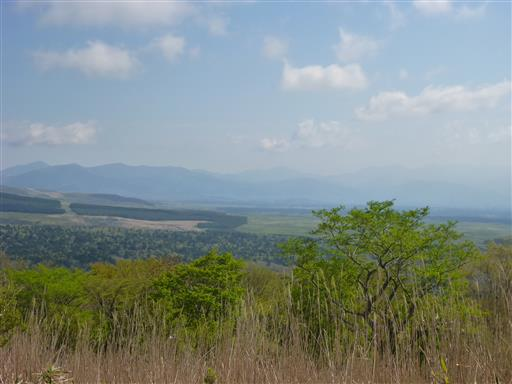
たくさんのベンチが並んでいる。
娘が座ろうとしたが、まだ歩き始めたばかりなので、先に進むよう促す。

ツツジの花が咲いている。ミツバツツジだろうか？
愛鷹山は固有種のアシタカツツジが有名だ。
開花期は5月中旬以降で、この時期はまだ咲いていない。
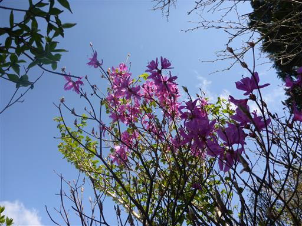
土が抉れて段差が大きい。
踏み跡はあちこち枝分かれしていて、歩きやすいルートを探しながら歩いて行く。
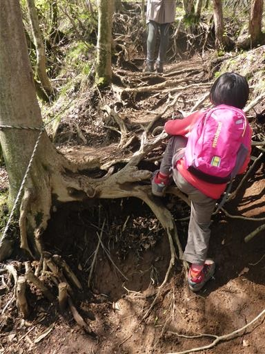
触角の長い小さな虫がウロウロしている。何とうい虫だろうか？
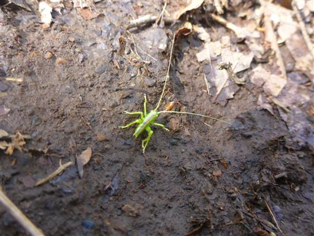
辺り一面ヤブレガサの葉で埋め尽くされている。
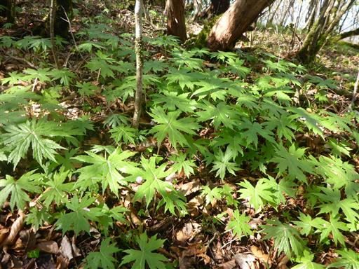
平坦地と名付けられ場所に到着。安直な名前だが、それほど平坦な場所は広くない。
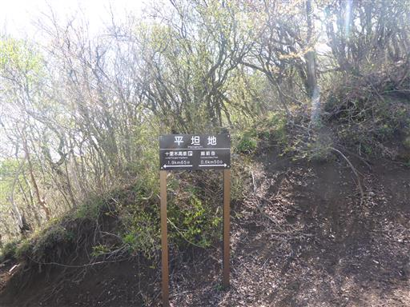
少しの間だけ雲の上に富士山の頭が見えた。

展望が開けない樹林帯の中の道が続く。

愛鷹山の最高峰、越前岳山頂に到着する。標高1504m。
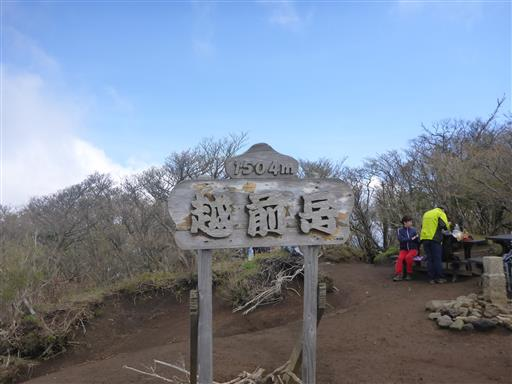
GW中なので、山頂は多くの登山者で賑わっている。
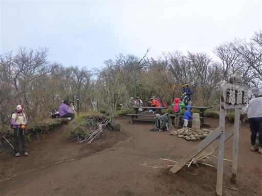
山頂からは愛鷹連峰から伸びる数多くの尾根を見下ろせる。
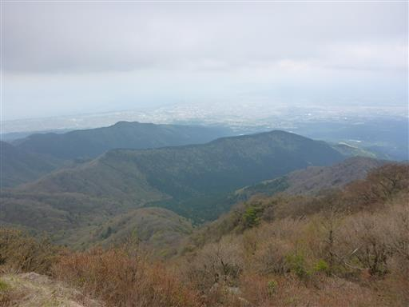
昼食を取ったら下山開始。下山は息子も歩かせる。
晴予報だったが富士山の眺望が得られず、少し残念な山行だった。
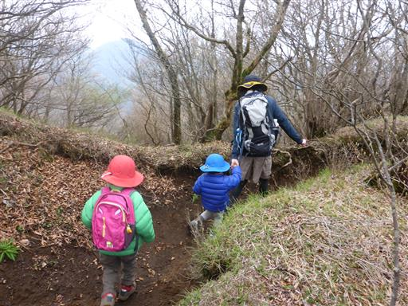
他の山行記録